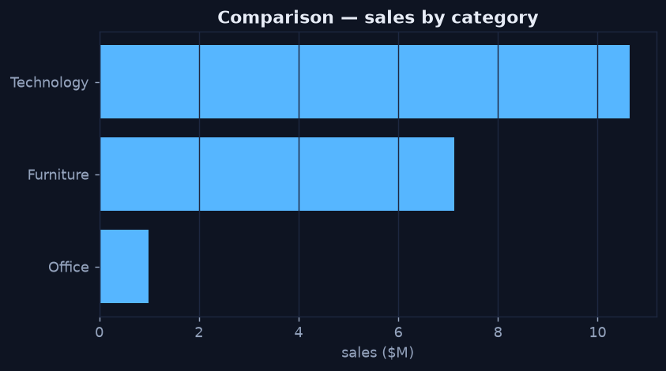
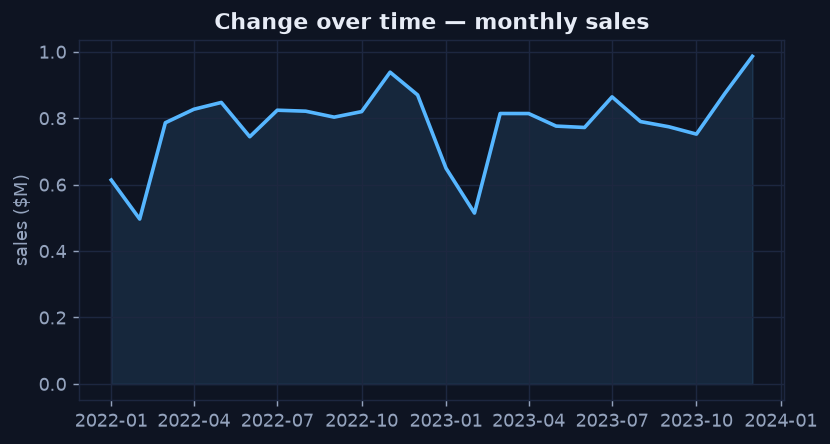
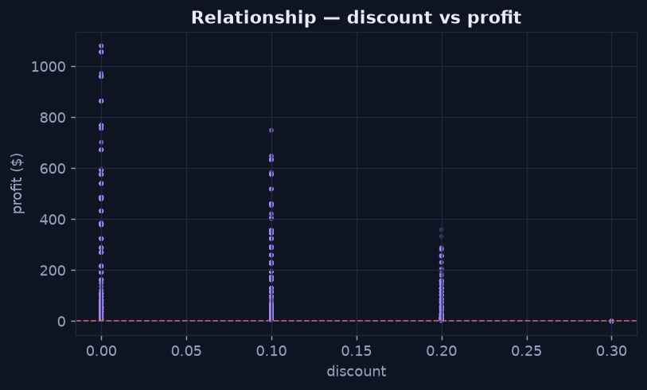
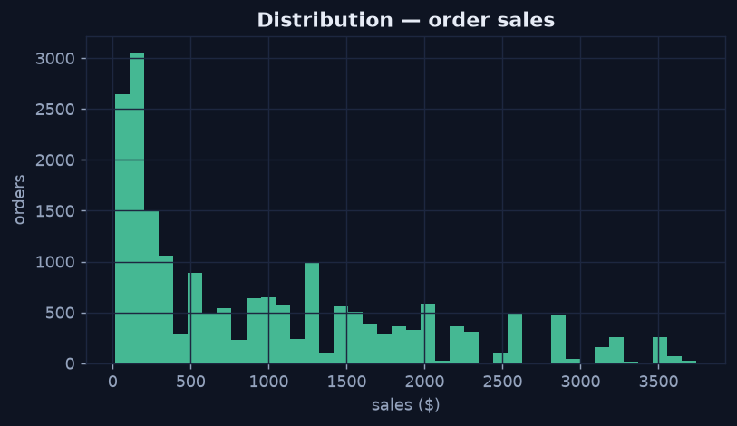
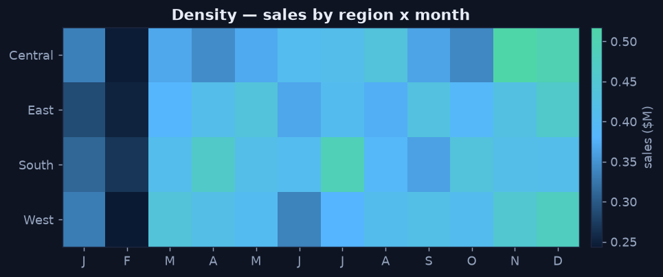

Choosing the Right Chart
Chapter 1 — Pick the Chart From the Question, Not the Gallery
The most common visualization mistake is starting from "what chart looks nice?" instead of "what question am I answering?" Almost every analytical question is one of five shapes, and each shape has a chart that the eye reads quickly. Below is each shape, the chart it wants, and the actual rendered output of the Python that produces it — all on the shared synthetic retail dataset.
Comparison → Bar Chart
"Which category is biggest?" is a comparison. A bar chart encodes each value as a length from a common baseline, and lengths are easy to compare. Use a horizontal bar when labels are long, and sort the bars so the ranking is obvious.
Python · pandas + matplotlib
s = orders.groupby("category")["sales"].sum().sort_values()
fig, ax = plt.subplots(figsize=(7, 3.6))
ax.barh(s.index, s.values / 1e6) # horizontal, sorted
ax.set_title("Comparison — sales by category")
ax.set_xlabel("sales ($M)")
Sorted horizontal bars make the ranking instant — Technology dominates total sales.
Change Over Time → Line Chart
"Is it growing?" is a time question. A line chart connects values in time order so the eye follows the slope. It is the default for any trend, and the foundation of the trending work covered in the descriptive series.
Python · pandas + matplotlib
m = orders.groupby("month")["sales"].sum() / 1e6
fig, ax = plt.subplots(figsize=(7, 3.6))
ax.plot(m.index, m.values, linewidth=2)
ax.fill_between(m.index, m.values, alpha=0.12)
ax.set_title("Change over time — monthly sales")
ax.set_ylabel("sales ($M)")
The line exposes seasonality — sharp Q4 lifts and quieter starts to each year.
Relationship → Scatter Plot
"Does X move with Y?" is a relationship question. A scatter plot puts one variable on each axis and plots a point per record, so any pattern in how they relate becomes visible. Here, profit clearly falls as discount rises — at a 30% discount, profit collapses to roughly zero.
Python · pandas + matplotlib
sample = orders.sample(2500, random_state=7)
fig, ax = plt.subplots(figsize=(7, 3.8))
ax.scatter(sample["discount"], sample["profit"], s=10, alpha=0.30)
ax.axhline(0, linestyle="--") # break-even reference
ax.set_title("Relationship — discount vs profit")
ax.set_xlabel("discount"); ax.set_ylabel("profit ($)")
The relationship is unmistakable: deeper discounts erode profit, hitting break-even at 30%.
Distribution → Histogram
"How spread out is it?" is a distribution question. A histogram buckets a single numeric variable into bins and shows how many records fall in each, revealing the shape — skew, peaks, and the long tail that an average alone would hide.
Python · pandas + matplotlib
fig, ax = plt.subplots(figsize=(7, 3.6))
ax.hist(orders["sales"], bins=40)
ax.set_title("Distribution — order sales")
ax.set_xlabel("sales ($)"); ax.set_ylabel("orders")
Order sales are right-skewed — most orders are small, with a tail of larger ones.
Density Across Two Dimensions → Heatmap
"Where is it concentrated?" across two categorical axes is a density question. A heatmap places one axis on each side and encodes the measure as colour intensity, so hotspots jump out — here, the year-end sales spike across regions.
Python · pandas + matplotlib
piv = (orders.assign(m=orders["order_date"].dt.month)
.pivot_table(index="region", columns="m",
values="sales", aggfunc="sum") / 1e6)
fig, ax = plt.subplots(figsize=(8, 3.2))
im = ax.imshow(piv.values, aspect="auto")
fig.colorbar(im, ax=ax, label="sales ($M)")
ax.set_title("Density — sales by region x month")
The bright right-hand columns show the Q4 lift is broad — every region peaks at year end.
The Decision in One Line
- Comparison → bar · Time → line · Relationship → scatter
- Distribution → histogram / box · Density (2 dims) → heatmap · Part-to-whole → stacked bar